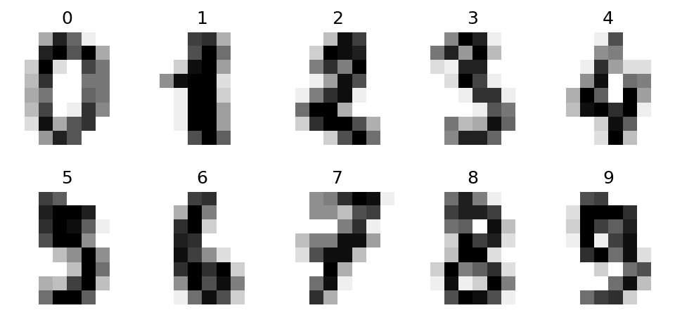
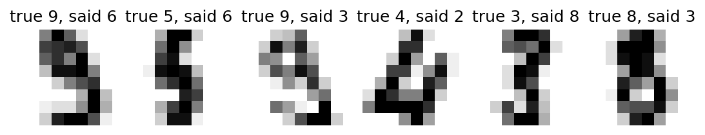

Recognising handwritten digits, from question to report
Introduction to Data Science and Machine Learning · Md Mahbub E Noor · University of Barishal
baseline -> candidates -> CV -> test once
Can a model recognise handwritten digits 0 to 9 from small 8×8 pixel images?
1,797 images, built into scikit-learn, so it works offline in the lab.
A clean notebook (restart and run all) and a one-page report.
This order never changes. Write a text cell above every step explaining what and why.
Each image is 8×8 pixels, stored as 64 numbers from 0 (white) to 16 (black). The label is the digit.
import matplotlib.pyplot as plt
from sklearn.datasets import load_digits
digits = load_digits()
X, y = digits.data, digits.target
print(X.shape)
fig, axes = plt.subplots(2, 5, figsize=(8, 3.6))
for ax, img, label in zip(axes.ravel(), digits.images, y):
ax.imshow(img, cmap="gray_r")
ax.set_title(label)
ax.axis("off")
plt.show()(1797, 64)

bincount counts each digitimport numpy as np print(np.bincount(y))
[178 182 177 183 181 182 181 179 174 180]
Split once, with stratify, and put the test set away · Baseline: always guess the most common digit · About 10%: the score to beat · Every result in the report is compared with this
from sklearn.model_selection import train_test_split
from sklearn.dummy import DummyClassifier
X_tr, X_te, y_tr, y_te = train_test_split(
X, y, test_size=0.25, random_state=0, stratify=y)
base = DummyClassifier(strategy="most_frequent").fit(X_tr, y_tr)
print(round(base.score(X_te, y_te), 3))0.102
Three models, same folds, training data only · k-NN inside a scaling pipeline · A tree and Naive Bayes for comparison · Pick the best mean for tuning
from sklearn.model_selection import cross_val_score
from sklearn.pipeline import make_pipeline
from sklearn.preprocessing import StandardScaler
from sklearn.neighbors import KNeighborsClassifier
from sklearn.tree import DecisionTreeClassifier
from sklearn.naive_bayes import GaussianNB
knn = make_pipeline(StandardScaler(),
KNeighborsClassifier())
tree = DecisionTreeClassifier(random_state=0)
cands = {"kNN": knn, "tree": tree,
"GaussianNB": GaussianNB()}
for name, m in cands.items():
s = cross_val_score(m, X_tr, y_tr, cv=5)
print(name, round(s.mean(), 3), round(s.std(), 3))kNN 0.969 0.004 tree 0.837 0.024 GaussianNB 0.834 0.018
Try several k, judged by cross-validation · k = 1 has the best mean here · But all values are within about 0.004 · Such small differences are mostly noise
for k in [1, 3, 5, 7, 9]:
m = make_pipeline(StandardScaler(),
KNeighborsClassifier(n_neighbors=k))
print(k, round(cross_val_score(m, X_tr, y_tr, cv=5).mean(), 3))1 0.973 3 0.969 5 0.969 7 0.97 9 0.971
from sklearn.metrics import recall_score
final = make_pipeline(StandardScaler(),
KNeighborsClassifier(n_neighbors=1))
final.fit(X_tr, y_tr)
pred = final.predict(X_te)
print(round(final.score(X_te, y_te), 3))
rec = recall_score(y_te, pred, average=None)
print(rec.round(2))0.967 [1. 0.98 0.98 0.93 0.98 0.98 1. 1. 0.95 0.87]
Looking at errors often teaches more than the score. Would you have read these correctly?
wrong = np.where(pred != y_te)[0][:6]
imgs = X_te.reshape(-1, 8, 8)
fig, axes = plt.subplots(1, 6, figsize=(9, 2.2))
for ax, i in zip(axes, wrong):
ax.imshow(imgs[i], cmap="gray_r")
ax.set_title(f"true {y_te[i]}, said {pred[i]}")
ax.axis("off")
plt.show()
| Section | What to write |
|---|---|
| Question | What you predict, and why it matters |
| Data | Source, size, features, label, class balance |
| Method | Split, baseline, candidate models, how you chose (cross-validation) |
| Results | Baseline vs final test score; per-class recall; a small table |
| Errors | 2 or 3 examples of mistakes and a guess why |
| Limits | What could make the result misleading; what you would try next |
Due before Lecture 14 · [date]
Restart and run all. Every step has a text cell explaining it.
Write the report using the template, with your own numbers.
Try one idea to beat your score (another model, another k, a different setting). Report it honestly, even if it fails.